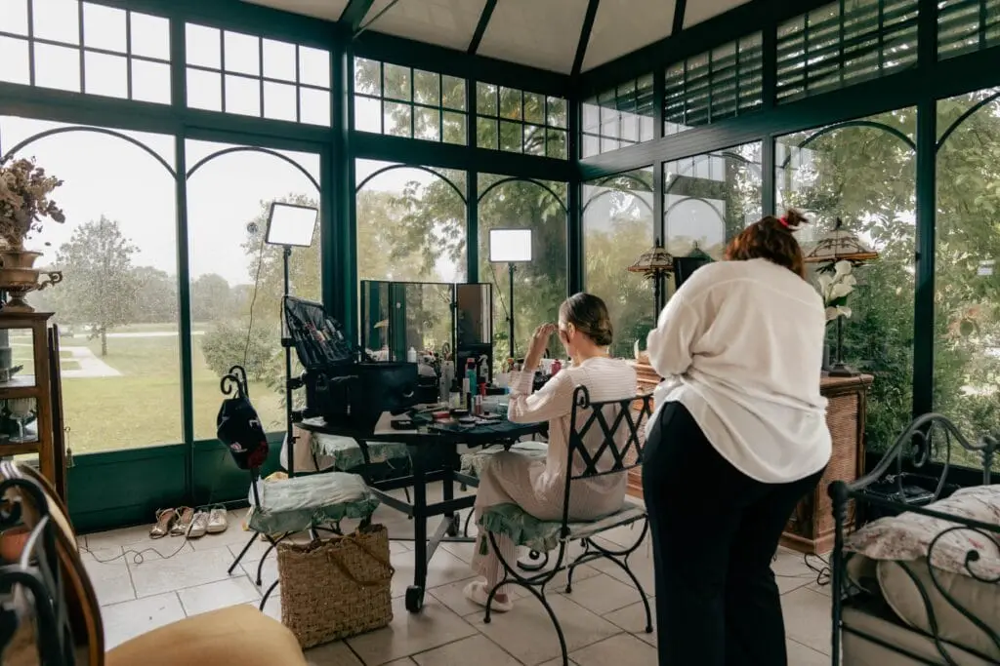
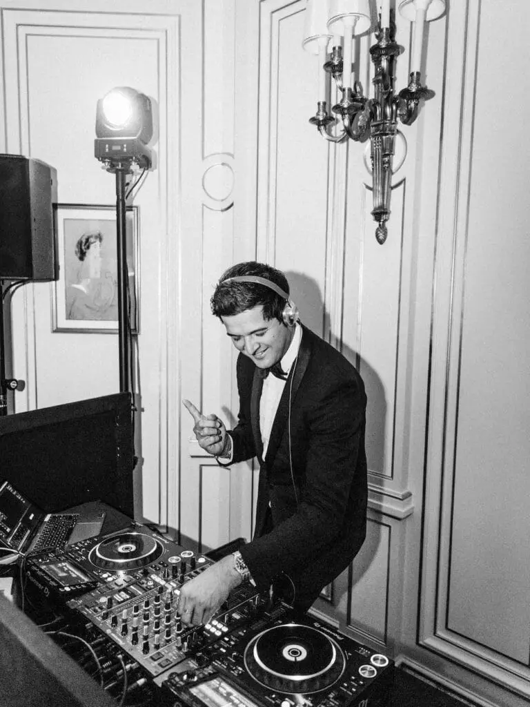
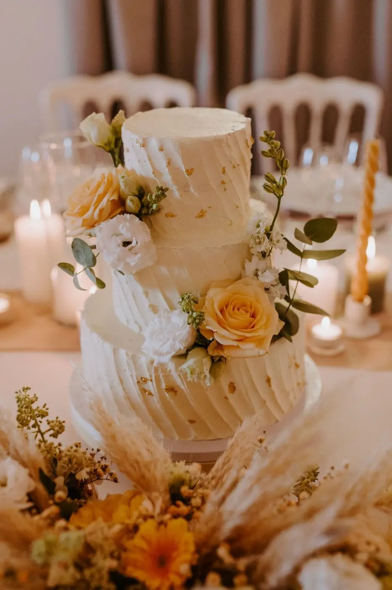
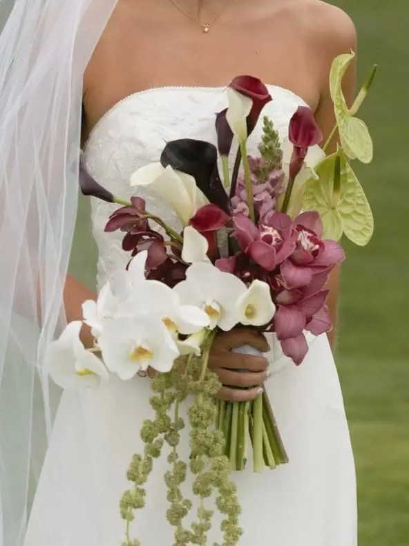
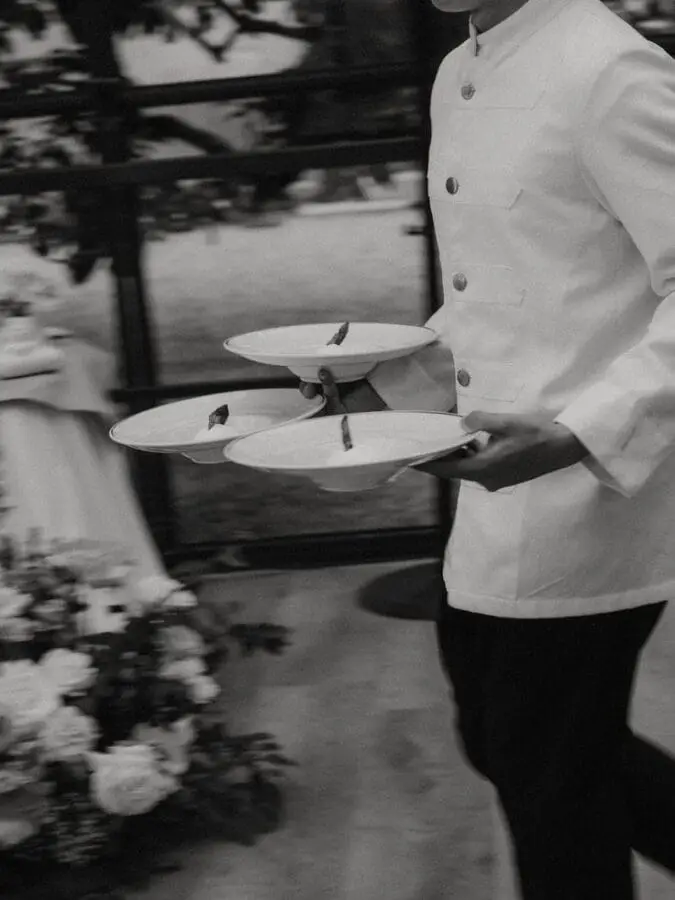
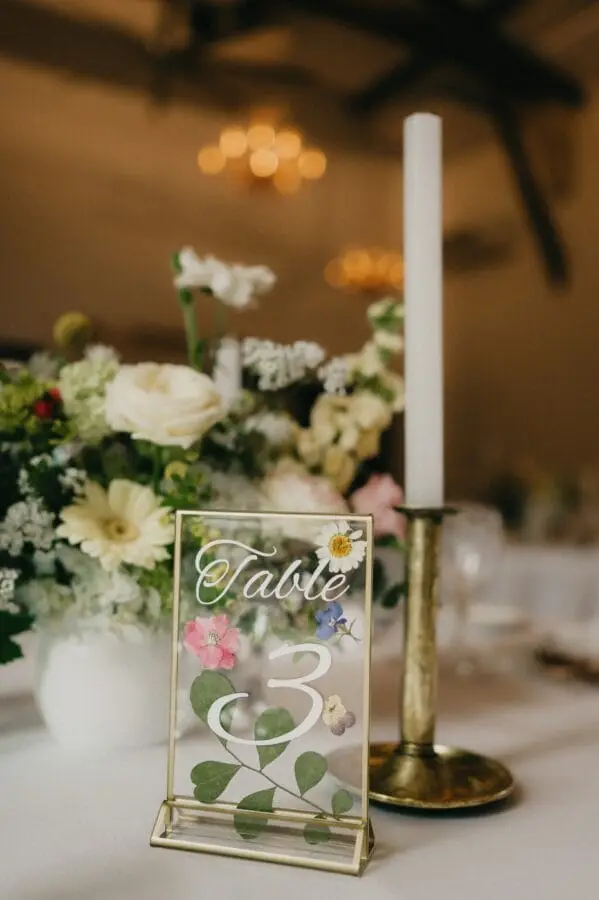

Derrière chaque mariage réussi, il y a une équipe. Un traiteur qui régale, une musique qui fait danser jusqu’au bout de la nuit, un photographe qui saisit les regards, un officiant qui trouve les mots justes. Bien choisir ses prestataires de mariage, c’est réunir des talents qui comprennent votre vision et savent travailler ensemble.
Comparer des tarifs sur internet ne suffit pas. Il s’agit de constituer une équipe de confiance, en accord avec votre style, votre budget et vos priorités. En Nouvelle-Aquitaine, entre domaines viticoles, châteaux et lieux de charme, l’offre est vaste : voici, prestataire par prestataire, ce que je regarde en tant que wedding planner avant de recommander quelqu’un.
Le traiteur : le cœur de votre réception de mariage
Le repas de mariage est sans aucun doute l’un des moments les plus attendus par vos invités. Il rythme la réception, crée des souvenirs forts et participe pleinement à l’expérience globale de votre journée. Le choix du traiteur de mariage est donc une étape essentielle dans l’organisation de votre événement et mérite une attention toute particulière.
Au-delà de la qualité gustative, un bon traiteur est un véritable partenaire de confiance. Il doit être capable de s’adapter à votre projet, à votre lieu de réception et à l’ambiance que vous souhaitez créer. Chaque mariage étant unique, le menu doit refléter votre personnalité et votre vision : cuisine traditionnelle ou gastronomique, propositions végétariennes ou vegan, repas assis, cocktail dînatoire, buffet élégant ou food stations conviviales. L’objectif est de proposer une expérience culinaire cohérente avec l’esprit de votre mariage.
L’aspect logistique est également un critère déterminant. Tous les lieux de réception ne disposent pas des mêmes équipements, et un traiteur expérimenté sait s’adapter aux contraintes techniques : cuisine sur place ou non, accès au domaine, horaires, nombre d’invités ou encore météo pour les réceptions en extérieur. Cette capacité d’anticipation garantit un service fluide et sans stress le jour J.
La prise en compte des régimes alimentaires et des allergies est aujourd’hui indispensable. Intolérances, menus spécifiques ou options enfants doivent être anticipés avec soin. Un traiteur professionnel saura vous accompagner sur ces aspects et proposer des alternatives adaptées, sans compromettre ni la qualité ni l’esthétique des plats servis.
La dégustation reste une étape incontournable dans le choix de votre traiteur. Elle permet de valider les saveurs, la présentation des plats, mais aussi d’évaluer l’écoute, la disponibilité et le sérieux de l’équipe. C’est souvent à ce moment-là que la confiance s’installe et que vous vous projetez pleinement dans votre réception.
Enfin, un bon traiteur ne se limite pas à servir un repas. Il coordonne son intervention avec les autres prestataires, gère son équipe avec discrétion et contribue à l’ambiance générale de votre réception. Le jour de votre mariage, pouvoir compter sur un traiteur expérimenté est une véritable source de sérénité et vous permet de profiter pleinement de chaque instant.
Un chef à découvrir : Adam Brunet. Chef privé et traiteur de mariage, il cuisine sur le Bassin d’Arcachon et à Bordeaux, mais aussi partout en France et à l’international. Son approche a tout ce que j’aime : un menu écrit avec vous, un repas test cuisiné chez vous, puis le chef lui-même à la tête de sa brigade le jour J, du vin d’honneur au brunch du lendemain. Ateliers huîtres, foie gras ou jambon à la découpe, dîner à l’assiette ou cocktail dînatoire : de 20 à 300 convives, la gastronomie devient un vrai moment de votre mariage.




Le DJ ou le groupe : créer l’ambiance parfaite pour votre mariage
L’ambiance musicale est l’un des piliers de la réussite d’un mariage. Elle accompagne chaque temps fort de la journée et influence directement l’énergie de votre réception. Le choix du DJ de mariage ou d’un groupe de musique live ne doit donc rien laisser au hasard. Ces prestataires sont responsables de l’atmosphère générale, des émotions partagées et des souvenirs dansés jusqu’au bout de la nuit.
Un bon professionnel de l’animation musicale doit avant tout comprendre votre univers, votre histoire et le style que vous souhaitez donner à votre mariage. Dès le premier échange, il est essentiel de discuter de vos goûts musicaux, de vos inspirations, mais aussi des morceaux que vous souhaitez absolument entendre… ou éviter. Cette phase de préparation permet de poser des bases claires et d’assurer une animation fidèle à votre personnalité le jour J.
Tout au long de la journée, la musique accompagne des moments clés : entrée des mariés, arrivée dans la salle, ouverture de bal, temps forts de la réception et bien sûr la soirée dansante. Chacun de ces instants demande un sens du timing précis. La musique doit soutenir l’émotion, créer du lien entre les invités et rythmer la journée sans jamais prendre le dessus.
Aujourd’hui, de nombreux DJs de mariage proposent un accompagnement sur mesure, avec des rendez-vous préparatoires, la création d’une playlist personnalisée et l’utilisation d’un matériel professionnel de qualité. Sonorisation de la cérémonie, micros pour les discours, éclairages adaptés à l’ambiance souhaitée : chaque détail contribue à une expérience fluide et immersive pour vos invités.
Un bon DJ ou un groupe expérimenté sait également lire la salle. Il observe les réactions, s’adapte aux différentes générations et ajuste la musique en temps réel afin de maintenir une énergie constante. Cette capacité d’adaptation fait toute la différence entre une simple diffusion musicale et une animation réussie, conviviale et mémorable.
Le choix entre un DJ de mariage et un groupe live dépend avant tout de vos envies et de l’atmosphère recherchée. Un groupe apporte une touche chaleureuse et authentique, tandis qu’un DJ offre une plus grande diversité musicale et une flexibilité totale. Dans tous les cas, la confiance, la qualité de l’échange et le professionnalisme du prestataire restent les éléments clés pour une ambiance réussie.
Le photographe : capturer l’émotion de votre mariage
Les photos de mariage sont l’un des rares souvenirs concrets que vous conserverez toute votre vie. Elles racontent votre histoire, capturent les regards, les émotions et les instants parfois invisibles le jour J. Le choix du photographe de mariage mérite donc une attention toute particulière, car son travail vous accompagnera bien au-delà de votre célébration.
Chaque photographe possède son style et sa sensibilité : reportage naturel et spontané, photos plus posées, approche artistique ou éditoriale. Il est essentiel de choisir un professionnel dont l’univers correspond à votre personnalité et à l’ambiance que vous souhaitez pour votre mariage. Pour cela, prenez le temps de consulter des galeries complètes, et pas uniquement quelques images sélectionnées sur les réseaux sociaux. Cela vous permettra d’évaluer la cohérence du travail, la gestion de la lumière, des émotions et des moments clés de la journée.
Le feeling est également primordial. Votre photographe sera présent à vos côtés pendant de nombreuses heures, parfois dès les préparatifs jusqu’à la soirée. Il doit savoir se faire discret tout en étant attentif, vous mettre à l’aise et instaurer une relation de confiance. Cette complicité se ressentira directement dans vos photos et donnera un rendu naturel et authentique.
Dans des régions comme la Nouvelle-Aquitaine, de nombreux photographes de mariage connaissent parfaitement les lieux de réception, domaines viticoles, châteaux et espaces naturels. Cette expérience est un véritable atout pour sublimer vos photos, anticiper les meilleurs points de vue et tirer parti de la lumière environnante. Un bon photographe ne se contente pas de prendre des images : il raconte votre journée avec justesse, émotion et élégance.

L’officiant : donner du sens à votre cérémonie de mariage
Lors d’une cérémonie laïque, l’officiant occupe une place centrale. C’est lui qui raconte votre histoire, met en mots vos émotions et donne une véritable profondeur à votre engagement. Bien plus qu’un simple maître de cérémonie, l’officiant de mariage crée un moment fort, sincère et profondément personnel, autant pour vous que pour vos proches.
Qu’il soit professionnel ou choisi parmi votre entourage, l’officiant doit avant tout être à l’écoute, bienveillant et parfaitement à l’aise à l’oral. Sa capacité à transmettre des émotions, à capter l’attention des invités et à instaurer une atmosphère authentique est essentielle. Une cérémonie réussie repose sur un équilibre subtil entre émotions, rythme et personnalisation.
Un bon officiant prend le temps de vous connaître, d’échanger avec vous sur votre histoire, vos valeurs et votre vision du mariage. Il construit une cérémonie sur mesure, fidèle à votre couple, en intégrant des textes, des rituels symboliques ou des interventions de vos proches. De plus en plus de couples choisissent aujourd’hui une cérémonie laïque personnalisée, souvent en extérieur, dans des cadres naturels ou viticoles, pour vivre un moment unique et hors du temps.
L’importance de la coordination des prestataires
Choisir de bons prestataires de mariage est indispensable, mais leur coordination l’est tout autant. Chaque intervenant a un rôle précis, et c’est l’harmonie entre tous qui garantit le bon déroulement de votre journée. La cérémonie, en particulier, nécessite une organisation millimétrée : installation, sonorisation, timing des entrées et des prises de parole.
C’est ici que le rôle de la wedding planner prend tout son sens. Elle vous accompagne à chaque étape, vous conseille dans vos choix et vous met en relation avec des professionnels de confiance, adaptés à votre budget et à votre projet. Grâce à une connaissance approfondie du terrain en Nouvelle-Aquitaine, une wedding planner anticipe les imprévus, assure une organisation fluide et vous permet de profiter pleinement de votre mariage, l’esprit léger, le jour J.
Le bon calendrier pour réserver
- 12 à 18 mois avant : le lieu de réception, la wedding planner, le traiteur et le photographe, souvent réservés en premier pour les dates de mai à septembre.
- 9 à 12 mois avant : le DJ ou le groupe, l’officiant, le fleuriste et le vidéaste.
- 6 mois avant : la papeterie, la mise en beauté, les animations et le transport des invités.
Les questions à poser à chaque prestataire
- Êtes-vous disponible à notre date, et qu’est-ce qui est inclus exactement dans votre devis ?
- Connaissez-vous notre lieu de réception, et quelles sont vos contraintes techniques ?
- Pouvons-nous voir un mariage complet, et non une sélection ?
- Qui sera présent le jour J, et jusqu’à quelle heure ?
- Quelles sont les conditions d’acompte, d’annulation et de report ?

En Bref,
Bien choisir ses prestataires de mariage est avant tout une question de confiance, de communication et de cohérence avec votre vision. Chaque professionnel que vous sélectionnez participe à la réussite de votre journée et à l’émotion que vous et vos invités vivrez. Traiteur, DJ, photographe, officiant… tous doivent partager la même exigence de qualité et la même sensibilité.
Prendre le temps des rencontres, poser les bonnes questions et comparer les prestations vous permet de faire des choix éclairés et sereins. Au-delà des compétences techniques, le relationnel est essentiel : un prestataire à l’écoute, bienveillant et investi fera toute la différence le jour de votre mariage.
S’entourer de professionnels passionnés, habitués à travailler ensemble et à s’adapter aux imprévus, est la clé pour vivre votre mariage pleinement, sans stress inutile. Dans la région bordelaise, où les possibilités sont nombreuses, l’accompagnement d’une wedding planner vous permet de constituer une équipe sur mesure, en parfaite harmonie avec votre projet.
Votre mariage mérite une organisation soignée et des prestataires à la hauteur de vos émotions, pour transformer cette journée unique en un souvenir inoubliable, à votre image.
Lovely Day Event c'est plusieurs types de prestations
L'organisation de mariage
Je vais intervenir sur toutes les étapes de vos préparatifs et vous guider dans vos choix. Je suis force de proposition pour que votre mariage ne ressemble qu’à vous.
Coordination le jour J
Je serai le chef d’orchestre pour gérer les différents prestataires, la mise en place de votre décoration et le déroulement de cette belle journée.
Décoration de mariage
Créative et passionnée, je suis certifiée Wedding Designer et je conçois une ambiance scénographique qui correspond au thème de votre mariage. La décoration est comprise dans l'accompagnement Signature, ou proposée en option avec la coordination du jour J.